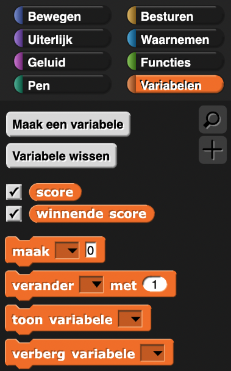

De score bijhouden met globale variabelen
Op deze pagina ga je een globale variabele gebruiken om je score in het Alonzo spel bij te houden.
In je Raad-het-getalspel van de vorige pagina heb je een script-variabele gebruikt om informatie (de waarde van het geheime getal) op te slaan die maar bij één script van toepassing was. Om de score bij te houden in het Alonzo spel, hebben meerdere scripts toegang nodig tot bepaalde informatie. In dat geval gebruik je een globale variabele.
Een globale variabele is een variabele die gebruikt kan worden door alle scripts in het programma.
Wanneer gebruik je globale variabelen?
In de meeste gevallen zijn script-variabelen de beste keuze, omdat ze niet aangepast kunnen worden door een ander gedeelte van het programma. Zo verklein je de kans op bugs. Maar als meerdere scripts toegang nodig hebben tot een variabele of als informatie uit een variabele opgeslagen moet worden, samen met het programma, dan kan je beter een globale variabele gebruiken.
- Open je H1L1-Alonzo project, speel het spel en bekijk de code, zodat je weer weet hoe alles werkt.
-
"H2L1-KlikAlonzo"

- Maak een globale variabele genaamd score. Hieronder staat hoe je dat doet.
- Klik op
 in het Variabelen-palet.
in het Variabelen-palet.
Het is geen blok; je kan dit niet in je script-gedeelte slepen. - Typ de naam van je variabele. In dit geval, is het score. Klik op OK.
- Gebruik de scorevariabele om de score van de speler bij te houden:
- Zet score op 0 bij de start van het spel.
- Zorg dat het programma de score
verhoogtmet 1, wanneer de sprite wordt aangeklikt.
- Test en debug. Speel het spel net zolang totdat je zeker weet dat je scorevariabele werkt.
score ← score + 1

- Op dit moment stopt het spel nooit, maar dat ga je veranderen! Kies een score waarbij je vindt dat de speler dit spel gewonnen heeft.
- Gebruik een voorwaarde om te besluiten of de speler die score bereikt heeft. Als de speler deze
score bereikt, moet je een aantal dingen doen:
- Zorg dat Alonzo stopt met rondspringen.
- Zorg dat Alonzo weer tevoorschijn komt. Je moet dan het ghost effect resetten.
- Feliciteer de speler.
- Test en debug. Speel het spel om de beurt en fix de bugs die je tegenkomt.
Bewaar misschien verschillende versies van je project.Debug-Tip: weergeven van variabelen
Globale variabelen hebben check-boxes die de weergave van de variabele 'kijker' aan en uit kunnen zetten (zie hieronder). Dit maakt het makkelijker om fouten in je programma te spotten.
